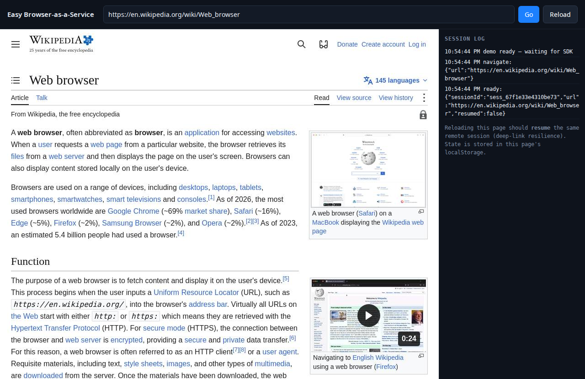

Embed the app that refuses to be embedded.
One Web Component. One stateless container. A real remote Chromium streams into your
page over WebSocket — its cookies and localStorage stay isolated from
yours, its network calls never touch your origin, and the session survives a reload of
your page.
- MIT licensed
- Vanilla JS SDK, no build step
- No database, no persistent volume
- Docker, Compose or Fly config included

/demo.html) streaming a live Wikipedia article through a
remote Chromium — captured from the running service, session log and all.
You have already tried the iframe.
The app you need lives behind a vendor that will not open up: no API, no CORS header, and a frame policy that blocks you outright. That is the whole reason this exists.
It refuses to be framed
X-Frame-Options: DENY or a frame-ancestors CSP stops an
iframe dead. Here the page is rendered by a browser you control, so there is no frame
policy to satisfy — it is a canvas, not an iframe.
Its cookies collide with yours
Two apps on one origin fight over localStorage, session cookies and
third-party cookie rules. Each remote session gets its own incognito browser context,
so its storage never mixes with your app's.
Its APIs ignore your origin
No CORS headers means no direct calls. The remote browser does the talking from inside your infrastructure, so your page never needs to reach the vendor's API at all.
This is a remote browser, not a magic header. The vendor's terms, licence and acceptable use still apply, and the browser runs on your network — see SECURITY.md before you point it at anything sensitive.
Three steps to embed
The SDK is a plain Custom Element that behaves like an iframe. No framework, no bundler, no npm install required in your app.
Run the service
git clone https://github.com/Spuds0588/Easy-Browser-as-a-Service.git
cd Easy-Browser-as-a-Service
./install.sh
Docker is used when its daemon is reachable, otherwise Node runs it on the machine.
It prints Up: http://localhost:8080/demo.html when the health check passes.
Load the SDK from that service
<script src="http://localhost:8080/sdk.js"></script>One file, served by the container itself. Point it at your own host in production.
Drop in the element
<remote-browser
src="https://legacy-crm.internal"
style="display:block; width:100%; height:640px"
></remote-browser>
Give it a height: the element's measured size becomes the remote viewport. Optional
attributes: server when the SDK is hosted on another origin, and
storage-key to keep session state under a different name.
Talking to the element
const rb = document.querySelector('remote-browser');
rb.addEventListener('ready', (e) => console.log('session', e.detail.sessionId, e.detail.resumed));
rb.addEventListener('download', (e) => console.log('user downloaded', e.detail.filename));
rb.navigate('https://legacy-crm.internal/accounts/42');
rb.reload(); // back to src
console.log(rb.status); // { ready, sessionId, url }
Events: ready, navigate, clipboard,
download and expired. Mouse, wheel, keyboard, text clipboard
and file pickers are wired up for you.
What is actually inside
Everything here is implemented over the Chrome DevTools Protocol on one master Chromium — no WebRTC, no STUN/TURN, no per-user browser process.
Screencast, not video
JPEG frames from CDP Page.startScreencast stream over a WebSocket and are
drawn to a canvas. Quality and frame size are tunable; each frame is acknowledged.
Real input passthrough
Clicks, movement, drag and wheel scrolling, plus keyboard events, mapped onto
Input.dispatchMouseEvent and Input.dispatchKeyEvent with
coordinates scaled to the remote viewport.
Text clipboard both ways
Copy in the remote page to get a clipboard event on the host, and paste
on the host straight into the focused remote field. Text only, by design.
Uploads and downloads
A remote file picker is intercepted and turns into a real picker on your page; remote downloads are captured in the container and handed back as a short-lived link.
Sessions survive reloads
Reload your page and the same remote session is re-attached (60 s reconnect grace by
default). Cookies and localStorage are replayed from the host, so the user
stays logged in.
Stateless, and reclaimed
The container holds nothing durable: no database, no volume. Idle, hidden and disconnected sessions are reaped, and bridged files expire after five minutes.
Isolated by construction
One browser process for the whole box, one incognito context per connection. Isolation is per session; memory grows with sessions, not with browser processes.
Drop-in, dependency-free SDK
A single vanilla JavaScript file registering <remote-browser> with
Shadow DOM. No React, no Vue, no bundler, no build step anywhere in the product.
Deploy it like any container
One image, one port, nothing to persist. The interesting constraints are shared memory and WebSocket support.
# one command, then http://localhost:8080/demo.html
./install.sh
# or straight compose, on another host port
PORT=9000 docker compose up -d --build
# or plain docker
docker run -d --name rbas -p 8080:8080 \
--shm-size=1gb easy-browser-as-a-service
Ships with Dockerfile, docker-compose.yml,
fly.toml and install.sh.
Full deployment guide →
- Port 8080 by default, overridable with
PORT. - WebSocket
/wsmust pass through your proxy with upgrades intact. - Shared memory
--shm-size=1gb(512 MB minimum) or Chromium renderers crash. - Writable /tmp the upload/download bridge lives there and cleans up after itself.
- Healthcheck
GET /healthz; the image declares it already. - Memory budget roughly 1 GB per concurrent session;
MAX_SESSIONSdefaults to 8. - TLS terminate at your proxy — the SDK upgrades to
wss://from the origin you give it. - Scaling scale to zero freely; multiple replicas need sticky routing on
/wsto keep resume working.
What it deliberately does not do
Worth knowing before you wire it into something important.
It has no authentication
Anything that can reach the port can open a session, so put it behind auth you already trust — a private network, an authenticated proxy. The browser also runs on your network, so restrict what it can reach.
No audio, images or WebRTC
Video frames carry no sound, clipboard sync is text-only, and streaming is deliberately WebSocket-based because WebRTC needs STUN/TURN infrastructure to deploy.
No persistence to rely on
Session state lives in the host page's localStorage, and restarting the
container drops live sessions. There is no database to back up — or to lose.
Read the source, run it in a minute.
MIT licensed. The README covers the component API, every environment variable, the endpoints, the session lifecycle and troubleshooting.
git clone https://github.com/Spuds0588/Easy-Browser-as-a-Service.git
cd Easy-Browser-as-a-Service && ./install.sh